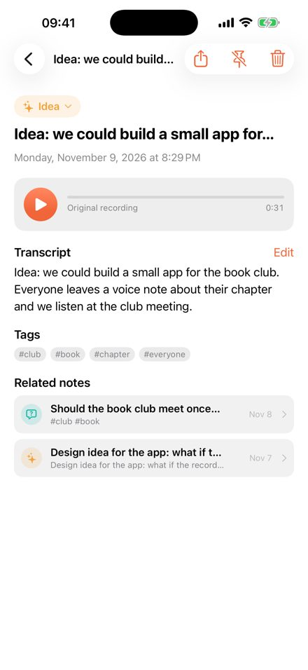
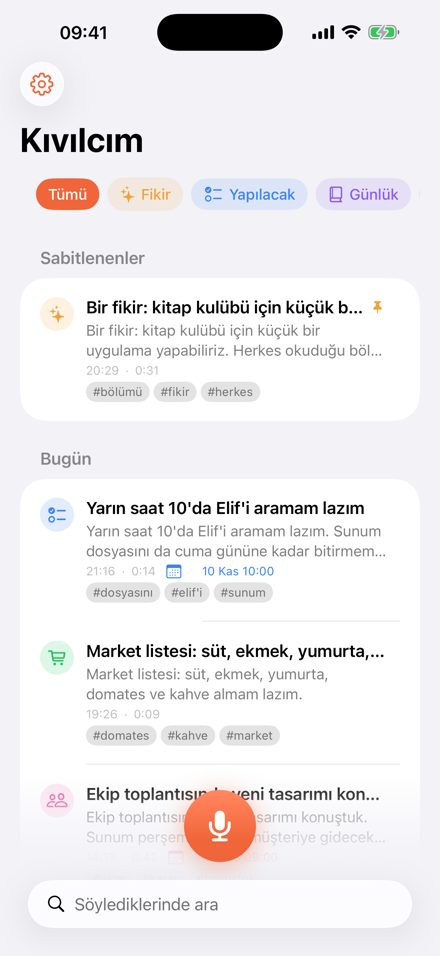

Voice notes that write, sort and link themselves. iPhone, iPad and Mac. Free.


Tap the button and talk. When you stop, Kıvılcım turns your voice into text, gives the note a title, files it as an idea, to-do, journal entry, question, meeting, shopping list or plain note, picks a few tags, and links it to earlier notes about the same things. Spoken dates such as "tomorrow at 10" or "on Friday" become the note's date.
Questions or problems: fatihgocgun@icloud.com · Privacy Policy
Kendini yazan, sınıflayan ve bağlayan sesli notlar. iPhone, iPad ve Mac. Ücretsiz.
Düğmeye dokun ve konuş. Durduğunda Kıvılcım sesini yazıya çevirir, nota başlık koyar; onu fikir, yapılacak, günlük, soru, toplantı, alışveriş ya da düz not olarak yerine koyar, birkaç etiket seçer ve aynı şeyden söz eden eski notlara bağlar. "Yarın saat 10'da", "cuma günü" gibi söylediğin tarihler notun tarihi olur.
Soru ve sorunlar için: fatihgocgun@icloud.com · Gizlilik Politikası